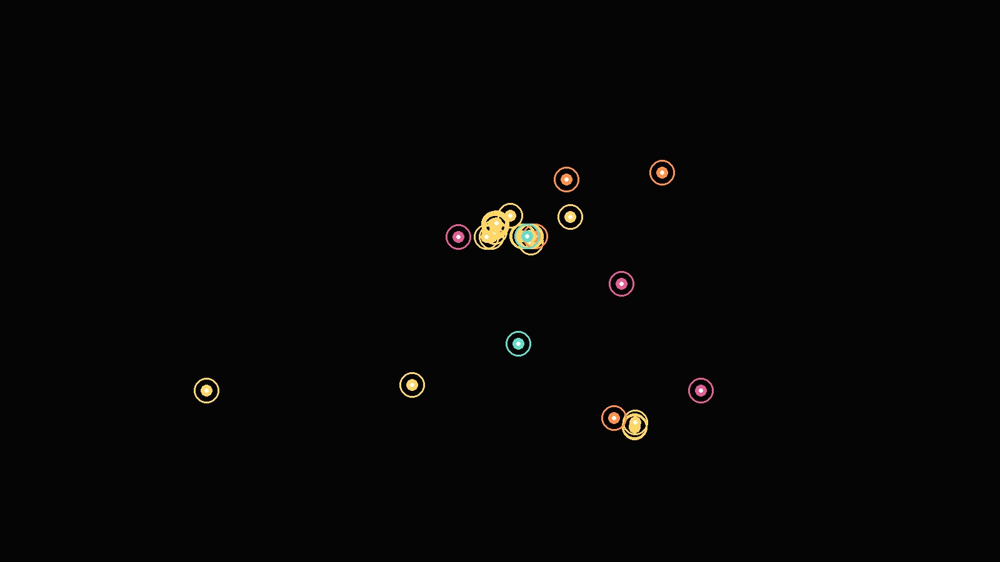

老城巷弄、南门音乐和文旅节点，共同塑造了“夜西安”的酒吧网络。
公开地图样本提示，酒吧密度较高的地方往往靠近游客步行路线、演出消费场景和老城巷弄体验。空间位置、业态类型和客流来源共同决定了这些街区的夜间活力。

城市夜间空间观察
32 个公开地图 POI 显示，西安酒吧文化并不是平均铺开的“夜生活大全”，而是围绕老城巷弄、南门音乐街区和文旅节点形成的夜间社交网络。
01｜新闻导语
在钟楼、南门、小寨、曲江和高新等核心片区中，酒吧并不是均匀铺开，而是沿着步行街区、演出场景、文旅入口和青年社交动线形成若干夜间节点。
公开地图样本提示，酒吧密度较高的地方往往靠近游客步行路线、演出消费场景和老城巷弄体验。空间位置、业态类型和客流来源共同决定了这些街区的夜间活力。
02｜背景证据
前两张图先交代分析路径：从报道问题出发，依次观察位置、类型、案例和可获得的信息。
这张图表达什么：报道从“酒吧聚在哪里”出发，再追问街区角色、文化类型和经营逻辑。
读图结论：空间分布、类型结构和案例分析构成了理解夜间街区的三条线索。
这张图表达什么：读者最终应获得地点、类型、解释和建议四类信息。
读图结论：页面结构围绕“看见位置、理解文化、解释原因、形成建议”展开。
03｜图表证据：在哪里
这一组图回答第一个新闻问题：西安核心城区的酒吧空间分布有什么规律。地图说明位置，排行说明强弱，距离和地标说明为什么这些地方更容易聚集。
这张图表达什么：每个点代表一个酒吧类 POI，颜色代表文化类型，横纵坐标为经纬度近似位置。
读图结论：样本明显围绕钟楼、南门、小寨、曲江等节点形成多中心结构。
这张图表达什么：比较不同街区样本数，直接回答“酒吧主要在哪里”。
读图结论：钟楼-德福巷和南门-九部坊是样本核心。
这张图表达什么：把样本按距离钟楼的远近分层，观察核心城区的吸附作用。
读图结论：近中心圈层仍是酒吧文化的主要承载区。
这张图表达什么：把样本归到最近的夜间地标，解释酒吧和游客/演出/步行路线的联系。
读图结论：钟楼、南门、大唐不夜城等地标构成夜间消费入口。
这张图表达什么：用角色标签解释空间差异，不把所有酒吧简单看成同一种消费。
读图结论：老城偏巷弄体验，南门偏音乐现场，曲江偏文旅演艺。
04｜图表证据：是什么
这一组图回答第二个新闻问题：这些酒吧呈现出什么文化样貌。图表提供结构，文字负责把结构解释成城市文化信息。
这张图表达什么：比较 bar、pub、biergarten、nightclub 等类型占比。
读图结论：bar 是主标签，精酿、夜店和餐酒馆构成补充类型。
这张图表达什么：从名称关键词推断精酿、音乐现场、清吧、派对等文化表达。
读图结论：西安酒吧文化更像多种夜间社交场景的组合。
这张图表达什么：把街区节点和文化类型交叉，观察不同区域的文化分工。
读图结论：南门的音乐现场信号更强，老城巷弄和清吧/精酿联系更明显。
这张图表达什么：观察中文、英文、混合命名的比例，判断传播语感。
读图结论：英文和中英混合命名提示酒吧常借助国际化语汇塑造氛围。
这张图表达什么：比较名称、类型、坐标、营业时间、网站链接等字段是否完整。
读图结论：营业时间和网站链接缺失较多，说明“可达性信息整理”本身有价值。
05｜采访案例分析
为了理解数据背后的街区选择，页面加入一位南门附近小型音乐酒吧经营者的匿名化案例分析，从选址、客流和经营压力三个角度解释图表中的空间现象。
访谈关注三件事：为什么选址南门、客人从哪里来、经营压力来自哪里。它对应图 4、图 6 和图 10 的空间证据。
南门样本量较高，经营者解释它依赖城墙、演出、步行街和夜间游客动线。
最近地标不是背景装饰，而是客流入口：游客、演出观众、下班社交都沿地标进入街区。
音乐现场类酒吧更需要固定场景和熟客，解释了南门文化类型和老城清吧/精酿的差异。
06｜读者可以得到什么
最后两张图把前面的证据收束成结论：不同街区有不同角色，传播时应讲清楚路线、场景和信息缺口。
这张图表达什么：从样本量、文化多样性、中心性、信息完整度四项比较节点特征。
读图结论：老城和南门承担核心角色，但优势维度不同。
这张图表达什么：把数据结论转成可传播路线，说明新闻产品如何服务读者。
读图结论：从“在哪里”到“怎么走、看什么、补什么信息”。
不是笼统推荐酒吧，而是理解哪个街区适合清吧、音乐、文旅夜游或朋友聚会。
交通入口、地标动线和文化定位，比单个门店装修更影响夜间流量。
“夜西安”可以从老城巷弄、南门音乐、曲江文旅三条线索讲起。
营业时间、官网链接等字段缺失明显，后续可通过采访和众包持续更新。